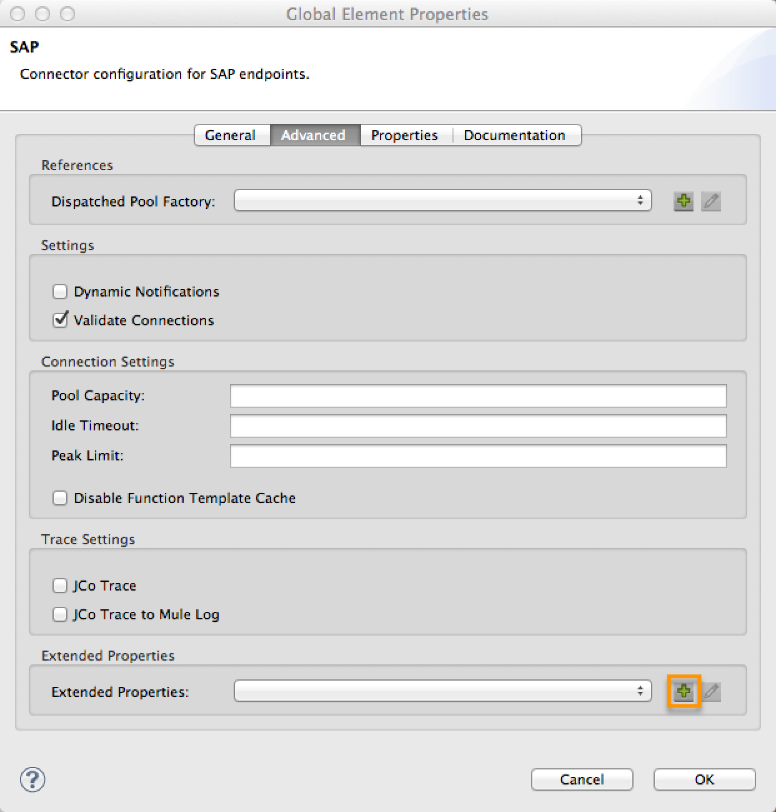

SAP Endpoint Reference
Enterprise
| This endpoint requires a separate license. Please contact MuleSoft if you want to evaluate or use this endpoint. |
Background
Mule ESB supports SAP integration through an SAP-certified Java connector. The connector leverages the SAP Java Connector (JCo) libraries, which enable Mule applications to:
-
send IDocs over tRFC and qRFC
-
receive IDocs over tRFC and qRFC
-
transform all SAP objects (JCoFunction & IDocs) both to and from XML
-
execute Business Application Programming Interface (BAPI) functions using all of the following types of Remote Function Calls (RFC)
-
sRFC (synchronous RFC)
-
tRFC (transactional RFC)
-
qRFC (queued RFC)
-
-
act as a JCo Server to be called as a BAPI over the following protocols:
-
sRFC
-
tRFC
-
qRFC
-
Pre-requisites
This endpoint requires the following SAP libraries:
-
Java Connector (JCo) library (Platform-dependent)
-
IDoc library
Note that the JCo library is dependent on both your hardware platform and operating system, so you need to download the correct version for the local drive running Mule Studio.
Three files are required for both libraries:
-
both multi-platform Java libraries:
-
sapjco3.jar
-
sapidoc3.jar
-
-
one of the JCo platform-specific native libraries:
-
sapjco3.dll (Windows)
-
libsapjco3.jnilib (Mac OS X)
-
libsapjco3.so (Linux)
-
| If you deploy to a platform that is different from the one used for development, you must change the native library before generating the zip file. |
Download the requisite SAP libraries. To perform this download, you must have an SAP user ID.
| To enable SAP to communicate with Mule, you need to perform additional SAP configuration. SAP configuration facilitates many options, which should be set by your SAP system administrator. MuleSoft will soon provide a simple sample configuration. |
Enabling Your Studio Project for SAP
If no native SAP libraries exist within your system, Mule simply uses the SAP Endpoint as any other Java Library; reference it in the project classpath, and Studio automatically includes the libraries when generating the Mule application zip file.
The ESB server includes the applications lib directory in the Java Native Library Path environment variable.
| If you are using Mule 3.2.1 or lower, you must install the native libraries on the server hosting the Mule application that contains your SAP endpoint. As well, you must configure Mule ESBs native library path. For details, consult the SAP Connector Reference Documentation. |
To run your SAP-enabled application inside Studio you must complete the following two tasks:
-
create the directory
src/main/app/lib -
copy all three libraries to this directory
-
In the Package Explorer pane, which resides of the left side of the Mule application window, click the plus
 icon to the left of your Mule project name to expand the resource tree.
icon to the left of your Mule project name to expand the resource tree. -
Click the plus icon to the left of
src. -
Click the plus icon to the left of
main. -
Click the plus icon to the left of
app. -
Right-click
app, select New > Folder. -
In the text box labeled Folder name, type
lib, then click Finish. -
Copy the three libraries
sapjco3.jar,sapidoc3.jarand the correct native library (if using CloudHub, use 64bit Linux) to thesrc/main/appdirectory.
-
Running an SAP-Enabled Application Inside Studio
To run the application inside Studio, you must first add the three libraries to the project classpath. To do so, follow these steps:
-
In the Package Explorer pane, right-click the projects directory, then select Properties. (Alternatively, press
Alt-Enterto open the Properties screen. -
In the Properties screen, select Java Build Path in the left pane, then click the Libraries tab.
-
Click Add JARs.
-
In the JAR Selection pane, navigate to
src/main/app/lib, which is the directory where you previously copied the SAP JCo libraries. -
Select the two files with a .jar extension (i.e.,
libsapjcoandsapjco3), then click OK.
-
-
Verify that the two .jar files you just added now appear on the Libraries tab of the Properties screen.
-
Click the arrow next to
sapjco3.jarto expand it, then double-click Native library location: (none). -
In the Native Library Folder Configuration dialog, complete the following sub steps:
-
click the Workspace button on the right
-
navigate to the projects
libfolder -
click OK. (Alternatively, type the location of the
libfolder, such as<Project name>/src/main/app/lib).
-
-
Verify that your Java Build Path configuration resembles the following screenshot, then click OK.
Adding the SAP Transport to the Classpath
Specifying the location of the SAP transport in your system classpath enables you to run/debug your project locally and to create custom Java code in your project that uses the transport classes.
The SAP transport dependency gets added automatically when you drop any SAP building block to the canvas.
To add the SAP transport manually to the classpath, complete the following steps:
-
Right-click on top of the projectin the Package Explorer pane.
-
Select Build Path Add Libraries
-
Select the library type Mule Cloud Connectors Dependencies and then click Next.
-
On the Extensions Classpath list, check the SAP extension.
Configuration
You can employ the SAP endpoint in any of the configurations listed below.
| Configuration | Activity |
|---|---|
IDoc Inbound Endpoint |
The SAP transport registers with a SAP server Gateway using a specific Program ID. This enables it to and receive iDocs sent to that destination. |
Function Inbound Endpoint |
The SAP transport registers with a SAP server Gateway using a specific Program ID that allows the SAP transport to be called as a Function or BAPI using the RFC protocol drawn from ABAP code in SAP. |
IDoc Outbound Endpoint |
The SAP transport sends an iDoc generated within Mule ESB to a SAP server. |
Function Outbound Endpoint |
The SAP transport calls a Function or BAPI that resides on a SAP server. |
The SAP transport uses JCo as the underlying SAP integration technology. The Inbound Endpoints (both IDoc and Function) start a JCo server, while the Outbound Endpoints rely on the JCo client.
The connector allows both synchronous and asynchronous communications. By definition, functions are synchronous and IDocs are asynchronous.
-
IDocs can be sent and received over tRFC and qRFC
-
Functions (both inbound and outbound) allow sRFC, tRFC and qRFC
|
If the SAP Endpoint is configured as a function, the value of the Function Name property references different objects, depending on context:
|
As from version 2.1.0, the SAP Outbound Endpoint can also be used to generate a template of a valid XML that represents a BAPI or an IDoc. In order to achieve this the type should be configured to function-metadata or idoc-metadata and the Function Name hold the name of the BAPI or IDoc.
SAP Transformers
The SAP endpoints receive and transmit SAP objects, which must be transformed to and from XML within your Mule flow. MuleSoft bundles three SAP transformers specifically designed to handle such transformation:
-
SAP Object to XML
-
XML to SAP Function (BAPI)
-
XML to SAP IDoc
These are available in the Transformers group on the Studio Palette. Entering SAP into the filter input box above the palette displays both the SAP Endpoint and the SAP Transformers (below):
Click and drag the SAP Object to XML transformer after an SAP inbound endpoint (or a SAP outbound endpoint if the endpoint is a function and expects a response).
Click and drag the XML to SAP Function (BAPI) or the XML to SAP IDoc transformers before your SAP outbound endpoint within your Mule application flow.
SAP Inbound Endpoint Requirements
If you are configuring a SAP Inbound Endpoint (JCo Server), you must modify your OS services file, which is:
-
/etc/servicesfor a Unix-based OS -
C:\WINDOWS\system32\drivers\etc\servicesfor Windows
In the above file, you must add your gateway (which is configured through the jcoGwService attribute or the jco.server.gwserv /jco.client.gwserv property). Just add the gateway; you dont need to add the entire service mapping list.
For example, to set the following, jcoGwService=sapgw00, add the following string:
1
bq. sapgw00 3300/tcp
Port 3300 is predefined by SAP, so if you need to validate other port numbers based on your SAP instance number, you can check the complete list of service-to-port mappings.
Connector Global Element
The SAP connector object holds the configuration properties that allow you to connect to the SAP server. When an SAP connector is defined as a Global Element all SAP endpoints use its connection parameters; otherwise each SAP endpoint uses its own connection parameters to connect to the SAP server.
To create an SAP connector, complete the following steps:
-
Click the Global Elements tab below the Message Flow canvas.
-
Click Create, then click the plus icon
to the left of Connectors. -
Select SAP from the drop-down list of available connectors, then click OK.
-
In the Global Elements Properties pane, enter the required parameters for defining an SAP connection, which your SAP system administrator should supply.
Connection Properties
Many SAP connection properties exist. For ease of use, the SAP connector only shows the most common properties as connector parameters. To configure a property that is not listed in the Properties pane, consult Extended Properties.
At a minimum, provide values for the following attributes:
-
In the Name field, enter an appropriate name for the Connector used by the SAP endpoints in your project.
-
In the AS Host field, enter the name (URL or IP address) of the SAP system.
-
In the User and Password fields, enter the username and password of a user authorized to connect to the SAP system.
-
In the SAP System Number field, enter the system number used to connect to the SAP system.
-
In the SAP Client field, enter the SAP client ID (usually a number) used to connect to the SAP system.
-
In the Login Language field, enter the language that will be used in the SAP connection, for example EN for English.
Extended Properties
To provide additional configuration properties, you can define a Spring bean global element representing a Map (java.util.Map) instance. This can be used to configure, among other properties, SCN (Secure Connections), or advanced pooling capabilities.
In this case, you must know the configuration property as defined by SAP. You can check the configuration properties list.
To define extended properties for the SAP global connector, complete the following steps:
-
Navigate to the Advanced tab on the Global Elements Properties pane.
-
Locate the Extended Properties section at the bottom of the window.
-
Click the plus icon next to the Extended Properties drop-down menu to define additional configuration properties.

Prioritizing Connection Properties
Properties for SAP connections, both inbound and outbound, can be configured in numerous places, which may cause an overlap of connection parameters. The following list details the priorities accorded to values specified in different places, with the highest priority level listed first.
-
Attributes defined at the SAP Inbound Endpoint and SAP Outbound Endpoint level, such as User, Password, Gateway Host, etc.
-
Properties in the Address attribute at the SAP Inbound Endpoint and SAP Outbound Endpoint levels. (However, MuleSoft does not recommend using of the Address attribute for SAP connections.)
-
Properties inside the Map configured in the Extended Properties pane for the JCo client or server at the SAP Inbound Endpoint and SAP Outbound Endpoint levels.
-
Attributes configured at the SAP Connector level (i.e., AS Host, User Password, SAP Client, etc.).
-
Properties inside the Map configured in the Extended Properties pane at the SAP Connector level.
-
Default values.
XML Definition
The definition provided below is the XML representation of a function (JCOFunction) or IDoc (IDocDocument /IDocDocumentList). These are the XML documents you exchange with SAP.
The SAP transport bundles SAP Transformers that convert the XML documents exchanged between the endpoints and SAP into corresponding SAP objects that the endpoints can handle.
View JCo Function code sample
1
2
3
4
5
6
7
8
9
10
11
12
13
14
15
16
17
18
19
20
21
22
23
24
25
26
27
28
29
30
31
32
33
34
35
36
37
38
39
40
41
42
43
44
45
46
47
48
49
50
51
52
53
54
55
56
57
<jco name="BAPI_PO_CREATE1" version="1.0">
<import>
<structure name="POHEADER">
<field name="COMP_CODE">2100</field>
<field name="DOC_TYPE">NB</field>
<field name="VENDOR">0000002101</field>
<field name="PURCH_ORG">2100</field>
<field name="PUR_GROUP">002</field>
</structure>
<structure name="POHEADERX">
<field name="DOC_TYPE">X</field>
<field name="VENDOR">X</field>
<field name="PURCH_ORG">X</field>
<field name="PUR_GROUP">X</field>
<field name="COMP_CODE">X</field>
</structure>
</import>
<tables>
<table name="POITEM">
<row id="0">
<field name="NET_PRICE">20</field>
<field name="PLANT">2100</field>
<field name="MATERIAL">SBSTO01</field>
<field name="PO_ITEM">00010</field>
<field name="QUANTITY">10.000</field>
</row>
</table>
<table name="POITEMX">
<row id="0">
<field name="PO_ITEMX">X</field>
<field name="MATERIAL">X</field>
<field name="QUANTITY">X</field>
<field name="PLANT">X</field>
<field name="PO_ITEM">00010</field>
<field name="NET_PRICE">X</field>
</row>
</table>
<table name="POSCHEDULE">
<row id="0">
<field name="QUANTITY">10.000</field>
<field name="DELIVERY_DATE">27.06.2011</field>
<field name="SCHED_LINE">0001</field>
<field name="PO_ITEM">00010</field>
</row>
</table>
<table name="POSCHEDULEX">
<row id="0">
<field name="PO_ITEM">00010</field>
<field name="QUANTITY">X</field>
<field name="DELIVERY_DATE">X</field>
<field name="SCHED_LINEX">X</field>
<field name="PO_ITEMX">X</field>
<field name="SCHED_LINE">0001</field>
</row>
</table>
</tables>
</jco>
View a JCo Function Response code sample
1
2
3
4
5
6
7
8
9
10
11
12
13
14
15
16
17
18
19
20
21
22
23
24
25
26
27
28
29
<?xml version="1.0" encoding="UTF-8" standalone="no"?>
<jco name="Z_MULE_EXAMPLE">
<import>
...
</import>
<export>
<structure name="RETURN">
<field name="TYPE"></field>
<field name="ID"></field>
<field name="NUMBER"></field>
<field name="MESSAGE"></field>
<field name="LOG_NO"></field>
<field name="LOG_MSG_NO"></field>
<field name="MESSAGE_V1"></field>
<field name="MESSAGE_V2"></field>
<field name="MESSAGE_V3"></field>
<field name="MESSAGE_V4""></field>
<field name="PARAMETER"></field>
<field name="ROW"></field>
<field name="FIELD"></field>
<field name="SYSTEM"></field>
</structure>
</export>
<exceptions>
<exception>MULE_EXCEPTION_01</exception>
<exception>MULE_EXCEPTION_02</exception>
<exception>MULE_EXCEPTION_03</exception>
</exceptions>
</jco>
JCo Function Return Types
The <field name="TYPE"></field> line contains the value for the return type, which can be any of the following:
-
A: Abort
-
S: Success
-
E: Error
-
W: Warning
-
I: Information
|
When
|
IDoc Document / Document List
IDocs are XML documents defined by SAP. You can download their definition from your SAP server using the SAP UI.
View an IDoc code sample
1
2
3
4
5
6
7
8
9
10
11
12
13
14
15
16
17
18
19
20
21
22
23
24
25
26
27
28
29
30
31
32
33
34
35
36
37
38
39
40
41
42
43
44
45
46
<?xml version="1.0"?>
<ORDERS05>
<IDOC BEGIN="1">
<EDI_DC40 SEGMENT="1">
<TABNAM>EDI_DC40</TABNAM>
<MANDT>100</MANDT>
<DOCNUM>0000000000237015</DOCNUM>
<DOCREL>700</DOCREL>
<STATUS>30</STATUS>
<DIRECT>1</DIRECT>
<OUTMOD>2</OUTMOD>
<IDOCTYP>ORDERS05</IDOCTYP>
<MESTYP>ORDERS</MESTYP>
<STDMES>ORDERS</STDMES>
<SNDPOR>SAPB60</SNDPOR>
<SNDPRT>LS</SNDPRT>
<SNDPRN>B60CLNT100</SNDPRN>
<RCVPOR>MULE_REV</RCVPOR>
<RCVPRT>LS</RCVPRT>
<RCVPRN>MULESYS</RCVPRN>
<CREDAT>20110714</CREDAT>
<CRETIM>001936</CRETIM>
<SERIAL>20101221112747</SERIAL>
</EDI_DC40>
<E1EDK01 SEGMENT="1">
<ACTION>004</ACTION>
<CURCY>USD</CURCY>
<WKURS>1.06383</WKURS>
<ZTERM>0001</ZTERM>
<BELNR>0000000531</BELNR>
<VSART>01</VSART>
<VSART_BEZ>standard</VSART_BEZ>
<RECIPNT_NO>C02199</RECIPNT_NO>
<KZAZU>X</KZAZU>
<WKURS_M>0.94000</WKURS_M>
</E1EDK01>
...
<E1EDS01 SEGMENT="1">
<SUMID>002</SUMID>
<SUMME>1470.485</SUMME>
<SUNIT>USD</SUNIT>
</E1EDS01>
</IDOC>
</ORDERS05>
Inbound Endpoint
An Inbound Endpoint receives IDocs and Functions over RFC. To implement a SAP Inbound Endpoint, complete the following steps:
-
Drag and drop the SAP Endpoint from the Endpoints group on the palette to the beginning of your flow.
-
Double-click the SAP icon to open the Endpoint Properties pane, then define your endpoints properties.
-
In the Type drop-down menu, select whether to receive IDocs or Function calls.
| After selecting the Endpoint type, the Endpoint Properties editor will automatically enable or disable parameter input boxes according to the selected endpoint type. For example, after selecting IDoc as the Endpoint Type, function-related parameters such as the Function Name input box or the Evaluate Function Response checkbox will be disabled. |
| Since the JCo server needs to register with the SAP instance, you must specify both the client and server configuration attributes. |
Inbound Endpoint Properties
The following table lists Inbound Endpoint properties.
| Property Name | Mule Attribute Name | Endpoint Properties Tab | Description | Default Value |
|---|---|---|---|---|
Display Name |
name |
General |
The reference name of the endpoint used internally by Mule configuration. |
|
All Exchange Patterns |
exchange-pattern |
General |
The available options are request-response and one-way. |
|
Address |
address |
Advanced |
The standard way to provide endpoint properties. For more information check: Endpoint Address. |
|
Type |
type |
General |
The type of SAP object this endpoint will process (i.e., function or idoc) |
function |
RFC Type |
rfcType |
General |
The type of RFC the endpoint used to receive a function or IDoc. The available options are srfc (which is sync with no TID handler), trfc and qrfc (both of which are async, with a TID handler). |
srfc |
Function Name |
functionName |
General |
If the type is function then this is the name of the BAPI function that will be handled. If no value is provided, then a generic handler is configured to receive all calls. |
|
SAP Client |
jcoClient |
Advanced |
The SAP client. This is usually an integer, such as 100. |
|
User |
jcoUser |
Advanced |
The logon user for password-based authentication. |
|
Password |
jcoPasswd |
Advanced |
The logon password associated with the logon user for password based authentication. |
|
Login Language |
jcoLang |
Advanced |
The login language. If not defined, the default user language is used. |
en |
AS Host |
jcoAsHost |
Advanced |
The SAP application server host. Use either the IP address or server name. |
|
SAP System Number |
jcoSysnr |
Advanced |
The SAP system number. |
|
Pool Capacity |
jcoPoolCapacity |
Advanced |
The maximum number of idle connections kept open by the destination. No connection pooling takes place when the value is 0. |
5 |
Peak Limit |
jcoPeakLimit |
The maximum number of simultaneously active connections that can be created for a destination. |
10 |
|
Gateway Host |
jcoGwHost |
General |
The gateway host on which the server should be registered. |
|
Gateway Service |
jcoGwService |
General |
The gateway service, i.e. the port on which registration is performed. |
|
Program ID |
jcoProgramId |
General |
The program ID with which the registration is performed. |
|
Connection Count |
jcoConnectionCount |
General |
The number of connections that should be registered at the gateway. |
2 |
Extended Properties |
jcoClientExtendedProperties-ref |
Advanced |
A Reference to |
IDoc Endpoint Properties
To configure an IDoc Server, complete the following steps.
-
Starting from the General tab of the SAP Endpoint Properties pane, set the Type property to IDoc.
-
Define the RFC Type parameter as Transactional RFC (tRFC) or Queued RFC (qRFC). IDocs are asynchronous by definition, so they cannot be received over Synchronous RFC (sRFC).
-
Configuring the TID Handler. The default is an in-memory TID handler.
-
Specify the following required attributes:
-
Gateway Host
-
Gateway Service
-
Program ID
-
-
Click the Advanced tab, then specify the required connection attributes, as necessary, for the endpoint or the connector. This might include, for example, SAP Client, User, Password, AS Host and SAP System Number.
Function Endpoint Properties
To configure the Endpoint as an RFC Server, complete the following steps.
-
Set the type parameter to
function. -
Define the rfcType parameter to
trfc,qrfcorsrfc. If rfcType is not specified,srfcis used by default. -
When rfcType is
trfcorqrfc, you may also need to Configuring the TID Handler. -
Specify the following required attributes: jcoGwHost, jcoGwService, jcoProgramId.
-
Specify the required connection attributes, as necessary, for the endpoint or the connector. This might include, for example, jcoClient, jcoUser, jcoPasswd, jcoAsHost, jcoSysnr.
-
In the General tab, set the Type property to
Function (BAPI). -
Define the RFC Type parameter as
Transactional RFC (tRFC),Queued RFC (qRFC)orSynchronous RFC (sRFC). -
If the RFC Type is either
Transactional RFC (tRFC)orQueued RFC (qRFC), then Configuring the TID Handler. -
Specify the following required attributes:
-
Gateway Host
-
Gateway Service
-
Program ID
-
-
In the Advanced tab, specify the required connection attributes, as necessary, for the endpoint or the connector. This might include, for example, SAP Client, User, Password, AS Host and SAP System Number.
Configuring the TID Handler
The TID handler (Transaction ID) is an important component for tRFC and qRFC, ensuring that Mule ESB does not process the same transaction twice.
To define the TID handler, complete the following steps.
-
In the General tab of the Endpoint Properties window, locate the TID Store section near the bottom of the window.
-
From the Type drop-down menu, select one of the three options for the TID handler:
-
None: No TID handler.
-
Default In Memory TID Store: facilitates the sharing of TIDs within the same Mule ESB instance. If the Endpoint Type is
tRFCorqRFC, and no TID store is configured, then this default store is used. -
Object Store TID Store: This wrapper uses existing Mule ESB object stores to store and share TIDs. If you need multiple Mule ESB server instances, you should configure a JDBC Object Store so that you can share TIDs among the instances.
-
| When the Endpoint Type is set to Synchronous RFC (sRFC), or it is not provided (thus defaulting to Synchronous RFC), then no TID handler is configured. Furthermore, if a TID handler has been configured in the XML file, it will be ignored. |
To configure an In-memory TID Store, you must observe the following:
-
the In-memory TID Store wont work as expected if you have multiple Mule ESB instances that share the same program id. (This is because the SAP gateway load-balances across all registered SAP servers that share the same program id)
-
the Endpoint Type should be trfc or qrfc
-
configuring the child element
<sap:default-in-memory-tid-store/>is optional, since the in-memory handler is the default option
References
If you already created the global connector (see Connector Global Element), then select it here. If not, you can create your SAP connector here.
Outbound Endpoint
An Outbound Endpoint executes functions (BAPIs), or it sends IDocs over RFC. Properties for an outbound endpoint resemble those of an inbound endpoint, and you configure them through the Endpoint Properties pane.
In an Outbound Endpoint, the IDoc or Function can be built in one of two ways:
-
defined as the endpoints payload
-
obtained from an XML file
To manually define the IDoc or Function, complete the following steps.
-
Navigate to the XML Definition tab within the Endpoint Properties pane.
-
Type or copy and paste the IDoc or Function into the input box below the Function / IDoc XML checkbox.
To obtain the IDoc or Function from an XML file, click Definition File, and do one of the following:
-
type the full path to the file
-
click (i.e., the ellipsis button) to navigate to the file
If you neither define the payload, nor specify a definition file, Mule builds the payload by applying a default template to the data received by the endpoint.
Outbound Endpoint Properties
The following table lists Outbound Endpoint properties:
| Property Name | Mule Attribute Name | Endpoint Properties Tab | Description | Default Value |
|---|---|---|---|---|
Display Name |
name |
General |
The reference name of the endpoint used internally by Mule configuration. |
|
All Exchange Patterns |
exchange-pattern |
General |
The available options are request-response and one-way. |
|
Address |
address |
Advanced |
The standard way to provide endpoint properties. For more information check: Endpoint Address. |
|
Type |
type |
General |
The type of SAP object this endpoint will process (i.e., function or idoc) Starting in 2.1.0 function-metadata and idoc-metadata can be used to retrieved XML structure for a given BAPI or IDoc. |
function |
RFC Type |
rfcType |
General |
The type of RFC the endpoint used to receive a function or IDoc. The available options are srfc (which is sync with no TID handler), trfc and qrfc (both of which are async, with a TID handler). |
srfc |
Queue Name |
queueName |
General |
If the RFC type is qrfc, then this will be the name of the queue. |
|
Function Name |
functionName |
General |
If the type is function then this is the name of the BAPI function that will be executed. When a metadata type is selected then this attribute holds the name of the BAPI or IDoc whose metadata should be retrieved. |
|
XML Version |
xmlVersion |
General |
When type is one of metadata types, then the version of the XML to generate (There are two possible XML versions for functions) |
Version 1 |
Evaluate Function Response (checkbox) |
evaluateFunctionResponse |
General |
When the type is function, a true flag (i.e., box checked) indicates that the SAP transport should evaluate the function response and throw an exception when an error occurs in SAP. When this flag is set to false (box unchecked), the SAP transport does not throw an exception when an error occurs, and the user is responsible for parsing the function response. |
false |
Is BAPI Transaction (checkbox) |
bapiTransaction |
General |
When checked, either BAPI_TRANSACTION_COMMIT or BAPI_TRANSACTION_ROLLBACK is called at the end of the transaction, depending on the result of that transaction. |
false |
Definition File |
definitionFile |
XML Definition |
THe path to the template definition file of either the function to be executed or the IDoc to be sent. |
|
IDoc Version |
idocVersion |
Advanced |
When the type is idoc, this version is used when sending the IDoc. Values for the IDoc version correspond to IDOC_VERSION_xxxx constants in com.sap.conn.idoc.IDocFactory |
0 (IDOC_VERSION_DEFAULT). |
SAP Client |
jcoClient |
Advanced |
The SAP client. This is usually an integer, such as 100 |
|
User |
jcoUser |
Advanced |
The logon user for password-based authentication |
|
Password |
jcoPasswd |
Advanced |
The logon password associated with the logon user for password based authentication. |
|
Login Language |
jcoLang |
Advanced |
The login language. If not defined, the default user language is used. |
en |
AS Host |
jcoAsHost |
Advanced |
The SAP application server host. Use either the IP address or server name. |
|
SAP System Number |
jcoSysnr |
Advanced |
The SAP system number. |
|
Pool Capacity |
jcoPoolCapacity |
Advanced |
The maximum number of idle connections kept open by the destination. No connection pooling takes place when the value is 0. |
5 |
Peak Limit |
jcoPeakLimit |
The maximum number of simultaneously active connections that can be created for a destination. |
10 |
|
Extended Properties |
jcoClientExtendedProperties-ref |
Advanced |
A Reference to |
Transactions
While the SAP outbound endpoint supports Transactions, distributed transactions are not supported, since the JCo libraries do not support XA.
To define transaction attributes, navigate to the General tab of the Endpoint Properties pane, then locate the Transaction section near the bottom of the window.
The following table lists transaction attributes:
| Property Name | Mule Attribute | Description | Default | Value |
|---|
Since version 2.1.0 is BAPI transaction attribute can be found in Client Settings pane in General options tab.
| For additional information, consult the Enterprise Java Connector for SAP. |